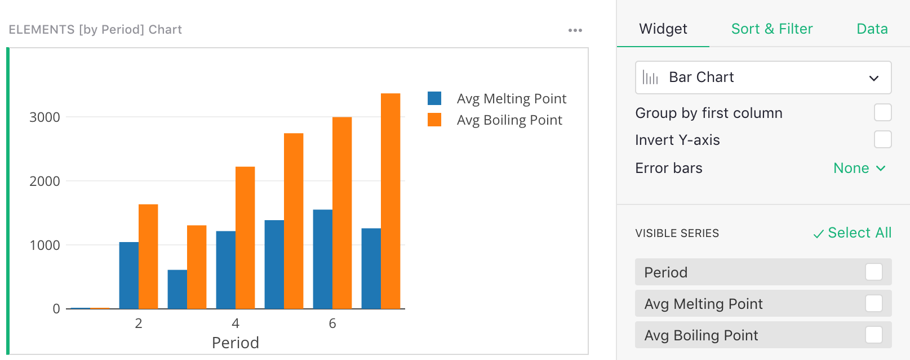
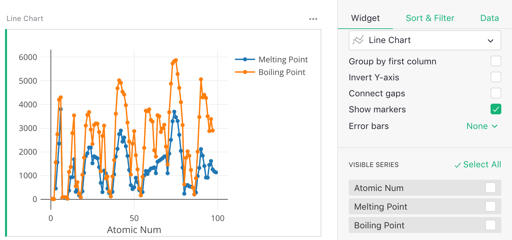
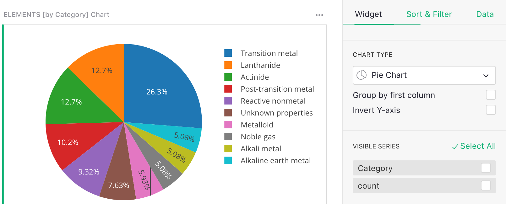
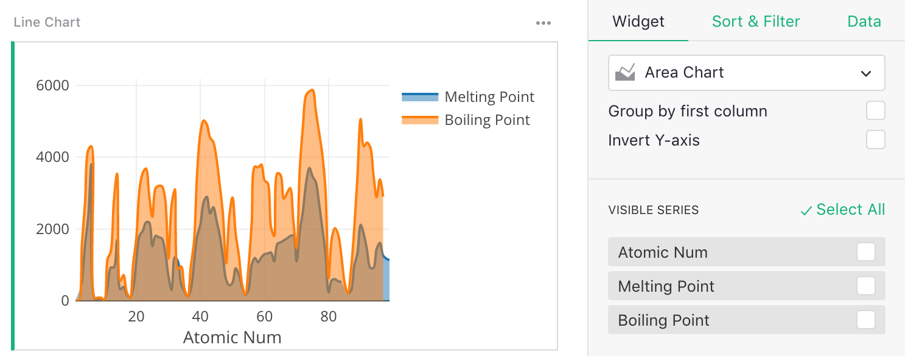
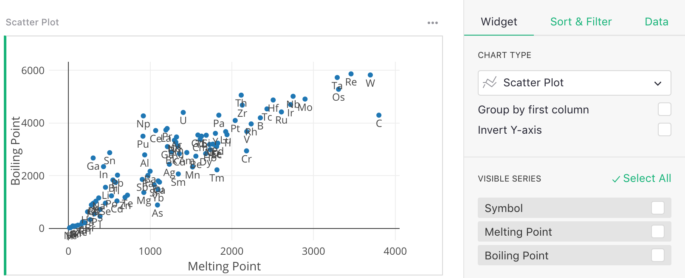
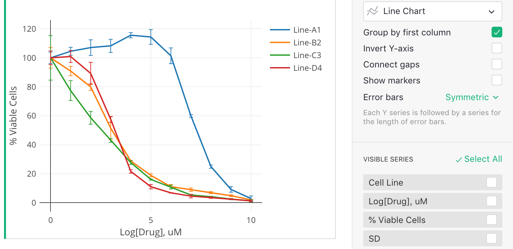

Page widget: Chart#
Grist supports several chart types to help you visualize your data easily. Charts may be used to plot a regular table of data, a linked widget (as described in Linking widgets), or a summary table (as described in Summary tables).
The most common chart types are illustrated here:

Chart types#
Each chart type plots several data series. Use the “Visible Series” list in the “Widgets” side panel for choosing the series to plot. The order of the list matters and determines how each series is used, as described below.
Bar Chart#
Needs two or more series: the first for bar labels (x-axis), the second for bar heights (y-axis). Additional series create additional bars at each data point and specify their heights.

Line Chart#
Needs two or more series: the first series is for the X values, the second is for Y values to create the line. Additional series specify Y values for additional lines.

Pie Chart#
Needs two series: the first for the pie slice labels, the second for the pie slice sizes.

Area Chart#
Similar to a line chart, needs two or more series: the first for the X values, the second for the Y values to create the line. Additional series specify Y values for additional lines.

Scatter Plot#
Needs three or more series: the first for the point labels, and the second and third for the X and Y values for each point, respectively. Additional series specify Y values for additional sets of points.

Kaplan-Meier Plot#
The Kaplan-Meier Plot is useful for certain studies, and needs two series: the first for the label of the line to which a point belongs, the second giving a survival time or time-to-failure of that point. The plot shows the survival times on the X axis, and the number of points that survive at that time on the Y axis.

Chart options#
A number of chart options are available, some of them specific to certain chart types.
Group by first column: When checked, an extra series is expected as the first series in the “Visible Series” list, and should contain a group label for each data point. All points with the same group value are plotted as a separate line.
For example:

Invert Y-axis: When checked the Y axis is flipped, with smaller values above and larger values below.
Connect gaps [for Line Charts only]: When checked, gaps caused by missing values are connected by connecting neighboring points. The “Show Markers” option described next can be used to keep a visual cue for which points are present.
Show markers [for Line Charts only]: When checked, each point on the line is marked additionally by a small circle. See the example for “Group by first column” above.
Error bars [for Line and Bar Charts]: When set to “Symmetric”, each Y series should be followed by a series for the length of the error bars to show. When set to “Above+Below”, each Y series should be followed by two series, one for the top error bars, and one for the bottom.

In the example here, the first series (“Cell Line”) specifies how to group the data into lines, since “Group by first column” is checked. The second and third series specify the X and Y values, and the last series (“SD”) specifies the error bars for the Y values.